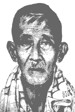

WEJANGAN-WEJANGAN KI AGENG SURYOMENTARAM
A.
Beja sesarengan wonten ing panggesangan, wujudipun sugih sesarengan lan guyub. Sugih punika raos tirah. Ing mangka pangupajiwa, yen tanpa ungkul tamtu cekap. Saening pangupajiwa punika, saking pangudi indhaking pamedal lan sudaning kabutuhan. Yen namung ngudi indhaking pamedal thok, yen kaleksanan angsal-angsalanipun inggih namung yab-yaban. Yen namung ngudi sudaning kabutuhan, yen kaleksanan angsal-angsalanipun inggih namung saya ngendherek saya ngendherek ngantos dumugi dhayak-dhayakan. Sirnaning ungkul wonten ing sesrawungan, inggih punika sirnaning raos butarepan, mahanani raos guyub. Butarepan, punika pados dipun kasihi. Guyub pados ngasihi. Butarepan cilaka, awit gumantung ing liyan. Guyub beja, awit boten gumantung ing liyan, jalaran sumerep, yen sih punika tukipun awakipun piyambak. Dados raos guyub punika paningal ingkang sumerep ing liyan, liripun sumerep kabutuhaning liyan ingkang sayektos. Inggih punika sirnaning ungkul. Utawi tentrem.
1. Pangredaning raos tentrem, mahanani tentrem sesarengan. Sadaya lelawananing tiyang tentrem. Boten pancing-pancingan lan githing-githingan. Tiyang sade kaliyan tiyang tumbas, anak kaliyan tiyang sepuhipun, guru kaliyan murid lan lelawanan sanes-sanesipun tentrem, dipun wastani jaman Windu Kencana. Wonten ing jaman ungkul sadaya lelawanan sarwa butarepan. Tiyang sade, butarepan dhateng tiyang tumbas, ajrih bok bilih sumerep kilakanipun; tiyang tumbas, ajrih bok bilih kalorop. Pancen ing jaman ungkul tiyang sade lan tiyang tumbas, namung lorop-loropan. Guru tansah butarepan kaliyan murid, ajrih bok bilih muridipun ngungkuli kasagedanipun, lajeng boten gumantung dhateng guru. Mila tansah dipun ewed-ewed, utawi dipun antep. Murid butarepan dhateng guru, ajrih bok bilih kalorop wulanganipun dipun palencongaken utawi angsal guru ingkang boten mangertos dhateng kawruh ingkang dipun seja. Mila ing jaman ungkul, murid tansah prihatin pados guru ingkang sampurna. Malah kasebut wonten kasusastran jaman ungkul makaten: "Lamun sira anggeguru kaki, amiliha sujanma kang nyata, ingkang becik martabate, sarta kang wruh ing kukum, kang ngibadah lan kang wirangi, sukur antuk wong tapa, ingkang wus amungkul, tan mikir pawehing liyan, iku pantes sira guronana kaki, sartane kawruhana." Kados makaten lelawanan sanes-sanesipun inggih ugi tansah butarepan. Wonten ing jaman Windu Kencana kosok wangsul, sadaya lelawanan tentrem. Tiyang sade namung lugu pados cekaping kabutuhanipun ingkang tumbas, tiyang tumbas nyekapi butuhipun ingkang sade. Guru namung pados wasising murid amrih madeg pribadi kawruhipun. Murid tumemen sinau. Ing jaman Windu Kencana, tiyang sami sumerep dhateng gegayuhan ingkang leres.
2. Wonten ing jaman Windu Kencana, sasampuning tuwuk wetengipun lan wetah sandhanganipun, tiyang sami seneng-seneng sesarengan. Barang ingkang dipun senengi inggih punika wujudipun: kagunan, kawruh, lan kasagedan. Princening kagunan lajeng dados kasusastran, gendhing, joged lan sanes-sanesipun ingkang mranani raos endah. Princening kawruh lajeng dados kawruh pikiran, barang adon-adon lan sanes-sanesipun ingkang mranani raos wasis. Princening kasagedan dados dedamelan warni-warni ingkang mranani raos gumun.
B.
Ing jaman Windu Kencana tindaking tiyang, sarwa beja sesarengan; tiyang sami saged angrewes dhateng kabutuhaning tiyang sadaya sawetah; mila makaten, jalaran kabutuhanipun piyambak-piyambak cekap; cekapipun amrih sirnaning ungkul. Ingkang makaten wau dipun wawas mawi paningal ungkul katingal nglengkara, utawi impen, sae-saenipun dipun wastani gegayuhan ingkang boten saged kalampahan. Ungkul anggenipun mawas makaten punika leres. Dene yektosipun jaman Windu Kencana punika wohing raos beja sesarengan. Kados dene jaman Windu Ungkul, wohing ungungkul-ungkulan sesarengan. Dados sarwa beja sesarengan punika wohing sarwa cekap lan seneng-seneng sesarengan.
1. Ing jaman Windu Kencana tiyang sami sumerep, yen prihatin (raosing ungkul) lan beja nular. Yen wonten tiyang prihatin lajeng konangan tangga-tangganipun, tumunten dipun jampeni, yen angel kapeksa dipun barak utawi awakipun piyambak ingkang mbarak. Mila tiyang sami sumerep, yen gadhah tanggelan dhateng tindaking liyan. Nularing raos sarwa beja boten kawon santer kaliyan ungkul, jalaran tangga-tangganipun tamtu sumerep yen sarwa sakeca, lajeng butuh tiru utawi pitaken sarta lelawanipun tamtu sakeca; yen sirna ungkulipun. Dene yen boten sirna inggih lestantun boten sakeca, jer raosing ungkul boten sakeca.
2. Ing jaman Windu Kencana tiyang boten mardika ngungkuli liyan; kados dene anggenipun boten mardika ngethok tanganipun piyambak. Ngethok tanganipun piyambak, tamtu kapagol ajrih sakit. Ngungkuli liyan kapagol rewes mardika; awit raos tentrem ngluwari rewes saking bebandan piyeng-piyeng; wasana tansah saged ngrewes raosing liyan utawi sawetah.
C.
Jaman Windu Kencana punika jaman nalika tiyang sami beja sesarengan; inggih punika idham-idhamaning tiyang sadaya sawetah. Nalika Windu Kencana dereng lair, ingkang dados suhing sawetah, sarana tiyang sami dipun iming-imingi sakeca utawi suwarga, utawi dipun ajrih-ajrihi paukuman utawi naraka. Wonten malih wohing pandamel yen gesang malih badhe katampi. Jaman Windu Kencana punika papanipun inggih jagat Windu Kencana, utawi jagat beja sesarengan.
1. Wujuding jagat beja, punika griya, kaperluan umum lan sesrawungan umum beja. Griya beja punika: nedha beja, nyandhang beja, mapan beja. Tiyang sami sumerep dhateng gegayuhaning tedha, sandhang, lan papan. Dados tetiga wau tamtu cekap. Kaperluan umum beja punika: bayen (anak-anak), biraen (tetes, tetak), panganten (laki-rabi), kepaten (pejah), beja. Tiyang sami sumerep dhateng gegayuhaning bayen, biraen, panganten, lan kepaten. Kaperluan sekawan rakawis wau tamtu cekap.
Wonten malih kabutuhan umum gangsal prakawis, inggih punika: Pakaryan, griya sakit, griya jempo, griya lola, lan sekolahan. Tiyang sami sumerep dhateng gegayuhan gangsal prakawis wau, mila tamtu cekap.
Sesrawungan umum beja punika: dhukun beja, jeksa beja, guru beja, lan ratu beja.
Dhukun beja pedamelanipun, anjagi sampun ngantos jagat beja katrajang penyakit ungkul ingkang ngrisak beja sesarengan. Jeksa beja, pandamelanipun anjagi sampun ngantos jagat beja katerak penyakit congkrah.
Guru beja, pandamelanipun anjagi sampun ngantos jagat beja katerak kawruh jare-jarene, patut-patute, lan duga-duga, ingkang wohipun dados cecongkrahan kawruh. Ratu beja, pandamelanipun anjagi sampun ngantos ing jagat beja wonten lelawanan cilaka, inggih punika pancing-pancingan, githing-githingan, lorop-loropan lan sapanunggilanipun.
2. Ing jaman Windu Kencana tiyang damelipun namung seneng-seneng, nyambut damel, seneng-seneng, nyambut damel; katungkak ompong, wanen, kisut, kempot, lajeng pejah.
Ing ngriku tiyang sami awet ayu lan bagus, boten kados tiyang wedalan Windu Ungkul: umur tigang dasa kemawon sampun pethot, kabekta saking kemrungsunging manah.
Ing jaman Windu Kencana kekiyataning tiyang tumrap pandamelan wetah; boten kalong kangge ungkul-ungkulan; mila boten langka yen mahanani sugih raja brana sesarengan.
Yen sampun terang ing nginggil wau sadaya, sadherek-sadherek beja, tamtu lajeng ngesukaken raos beja sarana anggelar jagat beja.